ニアミーの新たな選択肢！
01.
相乗り
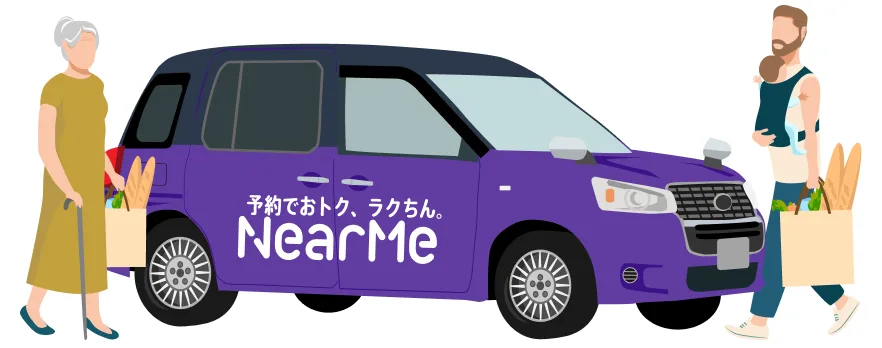
注文に応じた車両手配×相乗りで収支率の改善を目指す交通モデル
- 相乗りモデルで収支率を35%以上へ改善した実績あり！
- 乗合モデルに比べ広域に対応でき、部活・介護・観光など用途に応じた移動を提供
一般乗用旅客自動車運送事業における相乗り旅客運送／募集型企画旅行による実施も選択可
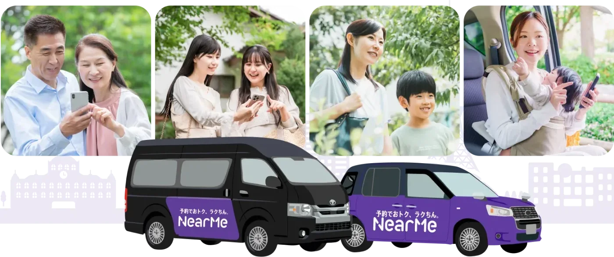
＼ 地方自治体を中心に 25自治体以上 の導入実績 ／
CASE
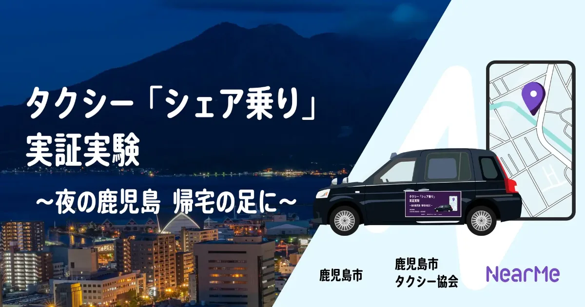
タクシー「シェア乗り」実証実験。夜の鹿児島で、帰宅の足に。
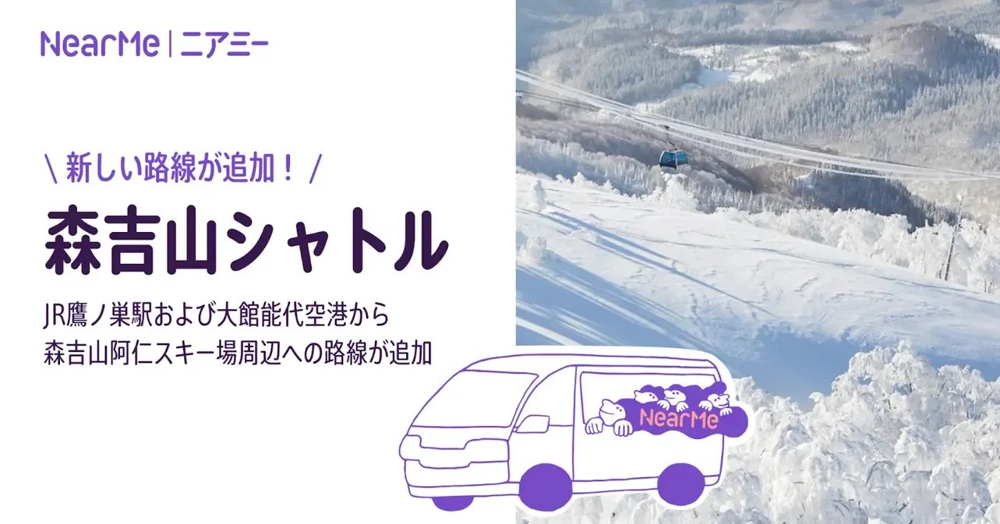
森吉山シャトルに新路線。JR鷹ノ巣駅・大館能代空港から森吉山阿仁スキー場周辺へ。
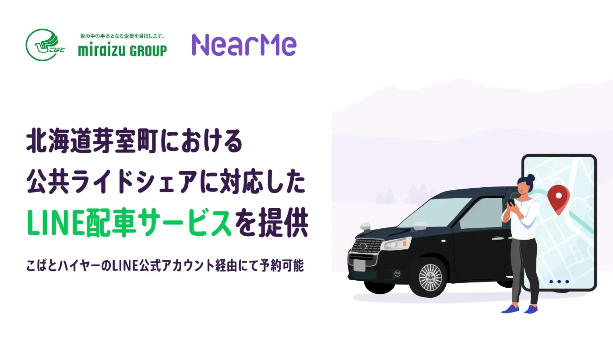
公共ライドシェアに対応した、LINEで呼べる配車サービスを提供。
＼ 導入地域増加中！最新事例を順次公開予定 ／
そんな時は
ニアミーにお任せください
POINT
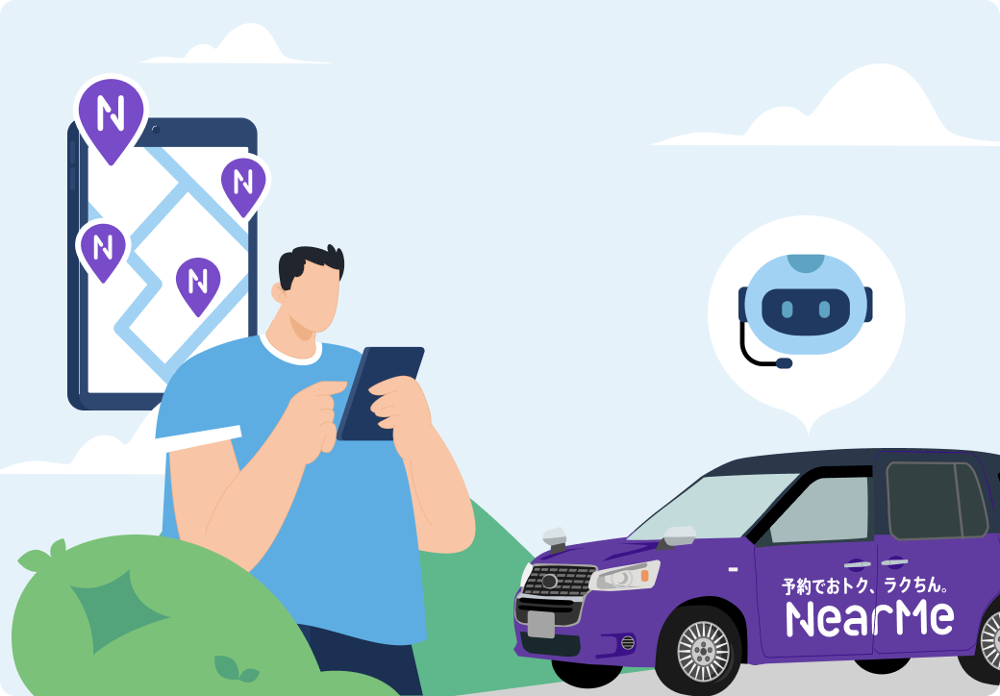
POINT 01
ニアミーの強みは、累計140万人以上の利用実績を誇る空港送迎で培われた、日本発・自社開発の相乗り促進アルゴリズムです。特許技術を用いた独自の配車ロジックと、膨大な走行データに基づくマッチングで、さらなる収支率の改善を目指します。
収支率を35%以上へ改善した実績あり
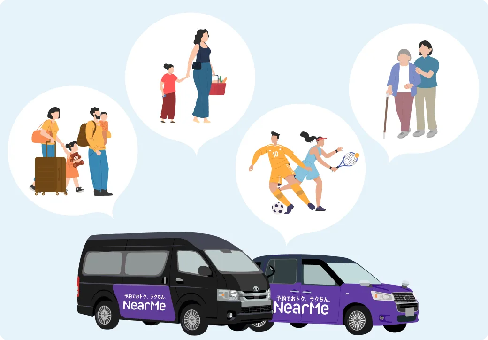
POINT 02
相乗り・乗合・ライドシェアの3つのサービスモデルから、ご意向に合わせて対応します。バスの減便などの地域交通の縮小から、部活動の地域移行・インバウンド観光、介護や習い事の送迎まで、柔軟に設計します。
POINT 03
ニアミーは、単にシステムを提供するだけではありません。課題の整理から実務の構築、そして運行開始後の改善まで、すべてのプロセスで地域にとことん寄り添う伴走型支援をワンストップで提供します。
MODEL
従来のオンデマンド交通では大型車を活用した「乗合」が主流でしたが、ニアミーは一歩進んだタクシーの「相乗り」という新たな選択肢を、地域の交通事業者様と協調しながら提案できます。
ニアミーの新たな選択肢！
01.

注文に応じた車両手配×相乗りで収支率の改善を目指す交通モデル
一般乗用旅客自動車運送事業における相乗り旅客運送／募集型企画旅行による実施も選択可
従来のオンデマンド交通
02.
一般的な車両借上型オンデマンド交通モデル
道路運送法第4条（一般乗合旅客自動車運送事業）または第21条の許可
供給補充のための交通モデル
03.
一般ドライバー自家用車活用型オンデマンド交通モデル
道路運送法第78条第2号（公共ライドシェア）・第3号（日本版ライドシェア）の許可
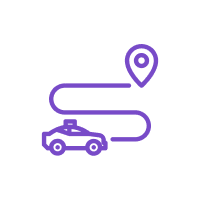
ドアツードア・スポット型・自宅と固定スポット間・エリア内乗降自由から選べます。
ターゲットに合わせて、Web・電話・LINEから予約できます。
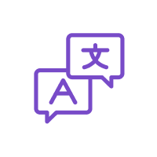
英語だけでなく、韓国語・中国語などもご用意しています。
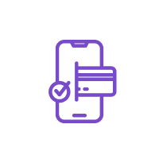
事前クレカ決済なら、ユーザーは当日乗るだけでOKです。
累計140万人以上の相乗り実績 ｜ 導入から改善まで本気の伴走型支援
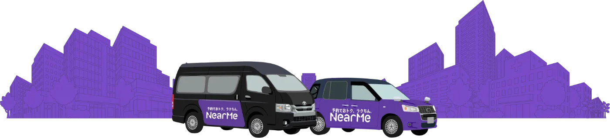
FLOW
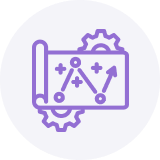
01.
約3ヶ月〜
課題整理から最適なサービス設計までを支援。ヒアリングに基づき、導入エリアや対象住民、サービスモデルを選定し、合意形成まで行います。
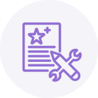
02.
約3ヶ月〜
運行会社との調整や研修、システム構築、運営テストに加え、説明会や周知物を通じた住民への案内を行います。
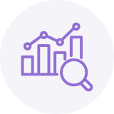
03.
サービス開始後〜
定期面談やフォローを通じて実績を分析し、KPIに基づいた改善提案でサービスの質を高めます。
FAQ
移動における「もったいない」を解消することを目指し、独自のAIを活用した「シェアによって、お得でスムーズ」な移動体験を提供するシャトルサービス「NearMe / ニアミー」を提供しています。
利用者の予約に合わせて柔軟に運行する仕組みのことです。ニアミーでは、フルデマンド・セミデマンドの両方に対応できます。
実施したい内容や具体的な要件により異なりますので、まずはお気軽にお問い合わせください。
導入決定から約6ヶ月間が標準的な期間です。要件により異なりますので、まずはお気軽にお問い合わせください。